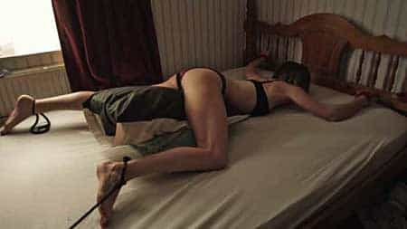

Little Deaths is a horror film that is really 3 short flicks. The first one is a typical vampire short and the second one involves Nazis. The third one is a peculiar short simply called “Bitch.” In thirty minutes, it shows a relationship between a beta, his domineering woman and its ultimate demise. It showcases the most horrific – and beta – act a man can commit: murdering his woman.
The movie features only two people of importance: Pete – a bartender – and Claire – a receptionist. The short opens up with her coming home and demanding that he make her a meal. He refuses and she tosses the food he was eating on the ground. She apologizes and says she will make it up to him – by going “to the room.” When he suggests the bedroom, she refuses. Later on, we see what the room is. After a night at a bar, where Claire clearly has eyes for the leader singer of the band playing, she tells Pete he would be better off going home. He refuses, but relents eventually, because he knows she will do what she always does – cheat on him.
That night she does not come home and he is the “room.” The room is a doghouse he sleeps in lieu of sleeping in the bedroom with her. They have relations that involve him placing on a dog mask and she pegs him -penetrating his ass with a strap-on. However, tensions are rising in the relationship with Pete becoming unsatisfied with it. One day at work, she comes in to his bar and she refuses to give him money, as she controls the purse-strings. He gets angry, gets in her face and tells her if she doe not give him the money he will smash her face till she bleeds to death. They go back home and for the first time they have actual heterosexual sex. However, Pete is a serious premature ejaculator and orgasms after a few seconds. She sighs – she grabs a dildo, with him lying next to her, and does herself. He pesters her and she ignores him. The camera slowly zooms in on him, as this is the beginning of the splitting for Pete.
The next day, we find out she has a deep fear of dogs and needs to be consoled after confronting one. Regardless, the climax is that night when a friend of Pete’s friend comes over for a drink and Claire is shamelessly flirting with him in front of Pete. The friend responds positively to her flirtations and they decide to hook up – while in front of Pete. He mistakenly assumed it will be a devil’s three-way; Claire intones Pete isn’t part of this. Those two retire to the bedroom and Pete tosses on his dog mask and saunters in on all fours. He sees first hand his woman getting fucked – they way he could not. He runs back to his doghouse and starts to sob. In this moment, he splits completely.
He rents a local garage and begins to purchase dogs, feed and lots of beef. He goes back to the apartment and begins to ignore her outright. He marches into the room and begins to dismantle the doghouse. She comes in, apologetic and crying, begging for him not to. He tells her it is over – she responds that she still wants it.
He leaves the apartment for a number of days, training his dogs to eat the beef and meat.

He goes back to the apartment on the fateful day, wakes her up from her sleep with a glass of wine and a package. She opens it eagerly and it has a pair of handcuffs in it. She flirtatious looks at him and intones she is privy to being cuffed up and fucked. He cuffs her up right then and leaves. She is screaming at him to come back – and he does, but with his pack of dogs. He pours the beef and meat he has been training them to eat all over her writhing body. He leaves the room and unleashes the hounds into her room. Pete celebrates with a glass of wine as the dogs begin to tear into her flesh. The background music montage cuts out to her dying screams as the trained beasts render her limb from limb. Pete is shown to be crying in the final shot.
Hypergamy rules in any society that has been through a sexual revolution – America is no different. The narcissism of America distorts the sexual marketplace in ways that are obvious in “Little Deaths.” We have a clear codependent in Pete and a compensatory narcissist in Claire. Claire is not a clinical narcissist, just one that takes on the role when presented with a weaker-willed person. Here, Pete is a supremely weak beta male, one that Claire can drain while still simultaneously chase alpha males. Pete, however, has a few experiences in the movie that push him over the codependent cliff.
![[Image: jekyll-or-hide-2face.jpg]](http://witchfulthinking.files.wordpress.com/2010/01/jekyll-or-hide-2face.jpg)
Understand this is psychological splitting. The definition of splitting is the inability of a person to reconcile both positive & negative traits of themselves or others into a complete, coherent whole. Classic splitting behavior is the vacillation between emotional extremes – for example, either you view yourself as completely moral & good or you view yourself as completely evil & bad. There is no middle ground. The worse the splitting is, the wider the chasm is between the states. This is hallmark behavior of a borderline personality disordered individual.
First, consider narcissistic splitting. Compensatory narcissists and codependents are still narcissists. Codependency is a form of narcissism that is called inverted narcissism. As such, they can split psychologically. The classic narcissist will always have intermittent episodes of “narcissistic depression” whereby they give into their supremely low self-esteem and engage in a period of superlative self-pitying. It will always be alleviated – usually by a codependent who will think this is moment they have been waiting for where they can finally act out a real, mutually compassionate relationship. Once the narcissist feels the worship, they shore up their flagging ego and revert back to standard narcissist operating procedure – completely devaluing of others.
This segues into codependent splitting. The key factor of codependency is having a deep ability to understand other’s emotions, but only insofar as it relates to perform particular emotional roles in other’s lives. This is narcissism, as codependents only see others as persons that they need to emotionally manipulate in order to get their approval. They sense the roles that a particular individual would like them to play out; they play them out in order to get approval & love. The key difference between the narcissism and codependency is how they view themselves: narcissists think the world of themselves, codependents think they are not worthy of the world.
Second, as such, codependents can split. Splitting occurs when deep-seated fears are faced, often forced by somebody else or some event. The delicate psychological balance of any sort of narcissist can be disrupted by anything that threatens something that is crucial to the maintenance of their identity. The maintenance of that identity is expressly to avoid dealing with their deepest fears. When directly confronted with their fears, splitting can occur. They can become unusually narcissistic in order to paper over their fears. They can also fall deep into depression. Depending on how deep the rabbit hole goes determines the outcome. If the ending of that rabbit hole is the very core of their being, it can get violent – either through suicide or killing others that represent the source of their existential terror.
In light of this, consider Pete and Claire in “Little Deaths.” There are three key elements to understand in order to fully flesh out the relationship: the doghouse/pegging, Pete’s premature ejaculation & the lead-up to and the killing of Claire.
Pete lives in a doghouse in a small room adjacent to Claire’s bedroom. This highlights the fact he is the clear subordinate in the relationship. Not content with psychologically dominating him, she places him in geographical isolation in a structure meant to reinforce his inferiority. It is for both of them, as Claire needs psychological reassurance that Pete is her inferior, Pete needs Claire’s approval he gets through complying with Claire’s frame.
The pegging is a clear inversion of heterosexuality. Pete wears a dog’s mask that reinforces his status as subhuman; Claire fucks him with ruthless abandon. Pete knows in order to get her approval, he has to let her fuck him in the ways the men Claire desires fuck her. It has an angry & bitter air to it, as Claire is upset she cannot get men she wants to commit to her. So, like many women, she locks down a beta male. However, she takes it to an extreme as she completely subjugates her beta, complete with forcible penetration.
Pete is presented with an opportunity when Claire’s interested is piqued when Pete sacks up & confronts her. In response to his nascent masculinity, she entertains the notion of an actual sexual encounter with Pete. She flirts with him and they go to her bedroom with giddy anticipation. However, even when we only see Pete’s backside, we see his burgeoning masculinity crumple once his cock tastes her vagina. His codependency takes over as it has never so much as sniffed this level of approval from Claire. He orgasms within seconds and his slumping shoulders signify a man defeated. Claire has a look of annoyed expectance, rolling over to use an object –a dildo – to pleasure herself. Pete notices this and recognizes that is all he has been to her – a tool, an object for her pleasure.
In the final act, after Pete splits when Claire openly fucks Pete’s friend in front of him, Pete decides to blow the whole relationship up. In a moving scene, Pete returns to the apartment to dismantle the doghouse. Claire intervenes, claiming the relationship was for both of them – and she would be right. However, Pete has decided that instead of dealing with his personal issues related to masculinity, self-esteem and women, he will completely and utterly destroy the relationship which has brought him so much reassurance and grief.
In her begging, she mentions that she still enjoys the relationship very much. He thoughtfully responds, “Well that’s the thing isn’t it – it has always been about you.” He leaves to finish training his dogs, only to return sometime later with an invitation for Claire. It is clear the roles of compensatory narcissist and codependent have flipped for the moment, as Claire accepts his offering of wine & handcuffs. Note, here, Pete is narcissistically wooing her for a change and she submits to his frame and dons the cuffs, completely at his mercy.
Here, he is subjecting her to a physical manifestation of their relationship. In the relationship, he was subject completely to her frame and whims. He had no recourse as he needed her as much as she needed him. Narcissists know their codependents fears and use them mercilessly against them. Pete knew Claire’s ultimate fear of dogs and used it against her in the worst way possible. He exposed her genitals and ass to that fear as he pointedly removed her panties before ushering in the beasts.
Which reveals his deepest fear – sexual inadequacy. By allowing Claire to peg him, he is releaved of any need to perform sexually beyond allowing her access to his ass. When he has a chance to change and face that fear down, he fails miserably and is confronted head-on with his sexual issues. When Claire flips on the dildo he must have been feeling supreme levels of inadequacy as he realizes a plastic object is more satisfying than a human being. When he cuts off her panties in order to expose them to her greatest fear, he reveals that his sexuality is his greatest fear. He wants to expose her like he has been exposed by her in his life.
When feminists, like Hugo Schywzer, talk about men needing to get pegged to be better men, what really is being suggested is a sort of Faustian bargain. It is trying to cover up your male sexual deficiencies by allowing a female to act out her anguish over not being able to control the men she is attracted to. The bargain is: “Let me fuck you in the way the men I want fuck me and I will stay with you. You will never have to deal with your sexual inadequacy issues and I will never have to deal with my abandonment issues.”
Both postures are biologically untenable and are psychologically unhealthy. However, so long as each person plays their role, it will exist into perpetuity. When one splits, like Pete, is it anybody’s guess as to what will happen in the aftermath. Biologically, he is grasping at his male identity of autonomy over his life, but he tragically outsources said autonomy in a murderous way. Psychologically, he is destroying the embodiment of his woes – Claire. When he is tearing up at the end, part of that is his recognition that he must now face down what has really been bothering him – his relationship with himself.
I must end with a lament. Men like Pete are ubiquitous in modern society. Their lives are marked by self-absorbed desperation that is reflected through their insatiable need for female approval. They were gifted that complex through a society that prioritizes female parenting and teaching. Many men are born to single mothers who are shepherded through a thoroughly female-dominated school system. These men only learn to kowtow to a female’s frame and suborn themselves to female emotions.
The lament here isn’t for the debasement of civilization that will surely follow such an arrangement, but for the individual men hurt and deceived.
Sometimes, society is progressing and recognizing issues that all men face. However, that progress is usually dashed on the coast of female privilege, as the media at large will always privilege female interests – it gets distorted as male privilege as alphas males get adoring audiences from female viewers.
Society isn’t progressing. It isn’t necessarily regressing, but stuck in the mud where betas like Pete get tore up in the hamster wheel spinning. Unable to capture the alphas they desire, women spin their wheels in the mud, using & pushing beta males like Pete further into irrelevancy. Most of the time they accept their inferiority – sometimes they violently crack like Pete.
We don’t live in a society that encourages real personal growth. Men like Pete mostly just fall through the cracks; occasionally striking back, like Pete, but most succumb to the feminine frame of subservience.
Murder is absolutely wrong, but what choice do you have when you are nothing but an object in a person’s life?
Read More: How To Build A Beta Male
{kind=link}
{kind=link}